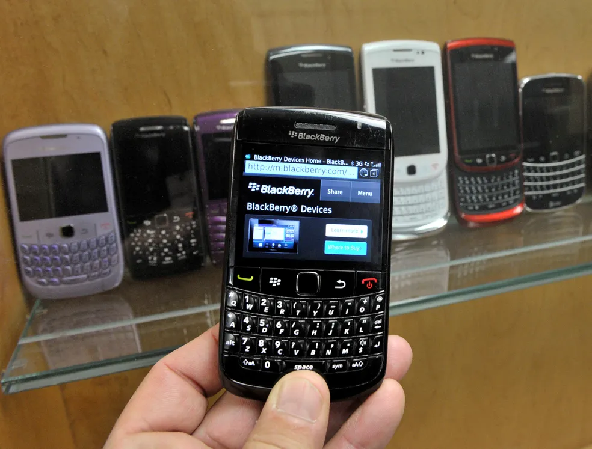

Celular BlackBerry: veja o que aconteceu com marca febre dos anos 2000.
Postado 04 outubro 2024

A BlackBerry encerra nesta terça-feira (4) o suporte aos seus celulares mais antigos, conhecidos pelo teclado físico. De acordo com a empresa, vários aparelhos "não funcionarão de forma confiável" para acessar a internet, fazer ligações (incluindo chamadas de emergência) e enviar SMS.
A decisão foi tomada por conta da mudança do foco da empresa nos últimos anos para softwares de segurança e já havia sido anunciada em setembro de 2020. O fim do suporte vale para celulares com os seguintes sistemas:
BlackBearry 7.1 OS e anteriores;
BlackBerry 10;
BlackBerry PlayBook OS 2.1 e anteriores.
A situação também afeta clientes com endereços de e-mail da BlackBerry, que precisarão migrar para outras ferramentas. Os celulares da BlackBerry com sistema Android não serão impactados pelo fim do suporte.
Em comunicado, a empresa orientou usuários a entrarem em contato com as operadoras de telefonia para receberem mais informações sobre como migrar para um novo celular. Com o encerramento dos sistemas, a companhia vai concentrar esforços em outra área.
Queda do BlackBerry
O BlackBerry perdeu espaço no mercado em meio ao crescimento de outros sistemas operacionais. Em 2010, por exemplo, ele estava presente em 16% dos celulares vendidos, segundo a consultoria Gartner. O Android, por sua vez, estava em 22,7% dos aparelhos e a Apple, em 15,7%.
No último trimestre de 2016, porém, a participação do BlackBerry caiu para apenas 0,0481%, de acordo com a Gartner. Naquele momento, o Android tinha 81,7% do mercado, enquanto a Apple detinha 17,9%.
Após encerrar a produção de seu modelo clássico, com teclado físico, a BlackBerry passou a permitir que outras empresas criassem aparelhos com a marca. Em uma das últimas tentativas, a companhia se juntou à TCL, que, em 2018, lançou modelos como o BlackBerry Motion, já com Android e tela touch.
Voltar